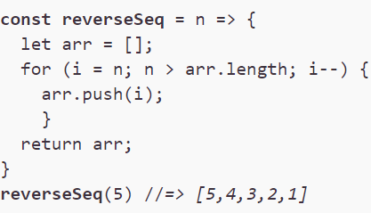

Contacts
 +48 733 519 287
+48 733 519 287 milana1726@gmail.com
milana1726@gmail.com- Liudmyla_Melnychuk#9705
Summary
I want to get a job as a Juniour Javascript Front-end Developer. In my opinion this direction in the IT sphere is progressive and interesting, because technology does not stand still and new fascinated and amused things that look like a magic are constantly appearing. It's exciting to learn how to do this, that's why I got interested in a spesial course at The Rolling Scopes School. I have some experience in web development, some programming experience in another area and I would like to learn and develop new skills that would allow me to work as Web Developer. I have ability to learn fast. I have responsible attitude to work, tasks and assignments.
Education
I was educated as a System Programmer at the Chernihiv National Polytechnical University (Chernihiv, Ukraine) in 2009.
Online courses:
- March 2021 - October 2022:
JS/FE in English (JavaScript) - September 2022 - in progress:
JS/FE in English (JavaScript) - In progress:
Maximilian Schwarzmuller
"Angular - The Complete Guide (2021 Edition)"
Liudmyla Melnychuk
I'm a student of The Rolling Scopes School.
Skills
Programming languages:
- JavaScript
- TypeScript
Markup:
- HTML5
- CSS3
Frameworks:
- Angular 11
Instruments:
- Version Control (Git)
- Adobe Photoshop
- Sublime Text, Visual Studio
Code examples
Task: Build a function that returns an array of integers from n to 1 where n>0.
Experience and Projects
At present, my experience is solving tasks on the online course Javascript/Front-end Mentoring Program at The Rolling Scopes School.
In past after university I worked as Computer Systems Engineer at the Chernobyl Nuclear Power Plan for a while (Slavutich, Ukraine). I worked on internal system for documentation management. I maintained an existing Java project, implemented minor features and fixed bugs. There was an application with MVC architecture and I was concentrated mainly on view part.
CV Task: CV. HTML, CSS & Git Basics.
Languages
- English: A2/B1 (Pre-Intermediate). Completed course of Business English level B2 at Pedagogical University of Krakow (December 2019 - June 2020)
- Polish: B1 (Intermidiate)
- Russian: native
- Ukrainian: native